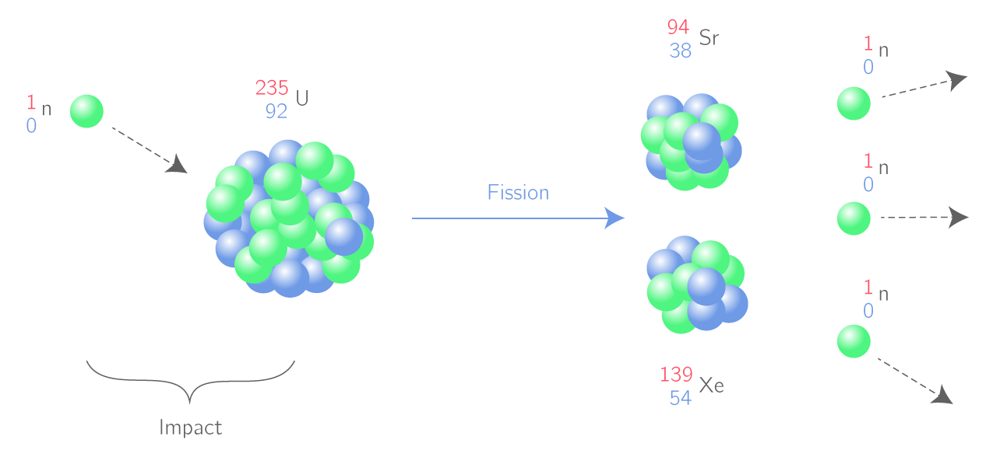
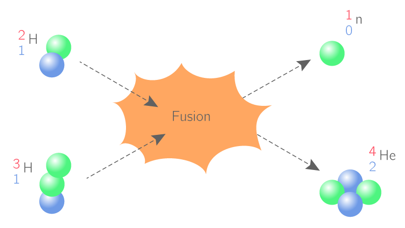

L’énergie nucléaire dépend d’un combustible fossile, l’uranium, dont le minerai est contenu dans le sous-sol de la Terre. Elle permet de produire de l’électricité, dans les centrales nucléaires, appelées centrales électronucléaires, grâce à la chaleur dégagée par la fission d’atomes d’uranium.
Les centrales nucléaires en France.Une centrale nucléaire produit de l’électricité grâce à l’énergie dégagée par la fission de noyaux d’uranium 235. Un neutron est projeté sur le noyau d’un atome d’uranium 235 qui se scinde en 2 noyaux fils en libérant une grande quantité d’énergie et des neutrons capables à leur tour de provoquer la fission d’autres noyaux d’uranium : il s’agit de réactions en chaîne.
Une réaction nucléaire n’est pas à confondre avec une réaction chimique car lors d’une réaction nucléaire, il n’y a pas conservation des éléments chimiques.Il existe deux types de réactions nucléaires : une dans le soleil,c’est la fusion nucléaire et une autre dans une centrale nucléaire, c’est la fission.
• Lors d’une réaction de fission, un noyau lourd éclate sous l’impact d’un neutron. La fission est utilisé dans les réacteurs des centrales nucléaires pour produire de l’électricité.

• Lors d’une réaction du fusion, deux noyaux légers s’associent pour former un noyau plus lourd. Dans le soleil et les étoiles, la température et la pression sont très élevées, ce qui procure une énergie importante aux particules. Les réactions peuvent s’y produire spontanément.

L’énergie libérée par le Soleil provient de réactions de fusion nucléaire. Au cœur du Soleil, la forte densité et la température dépassant 15 millions de degrés Celsius permettent à deux noyaux légers de fusionner en libérant une grande quantité d’énergie.
Les isotopes sont des entités ayant le même numéro atomique
mais un nombre de nucléons différents.
Exemple: Fusion dans le Soleil de 2 noyaux isotopes de l'hydrogène:
Les avantages du nucléaire sont:
Les inconvénients sont:
Les risques sont les suivants:
Les déchets, ils sont placés dans des installations aménagées en surface ou en faible profondeur pendant une durée limitée, avant un éventuel stockage. L'entreposage concerne: les déchets à vie très courte (VTC), dont le niveau de radioactivité disparaît en seulement une centaine de jours.